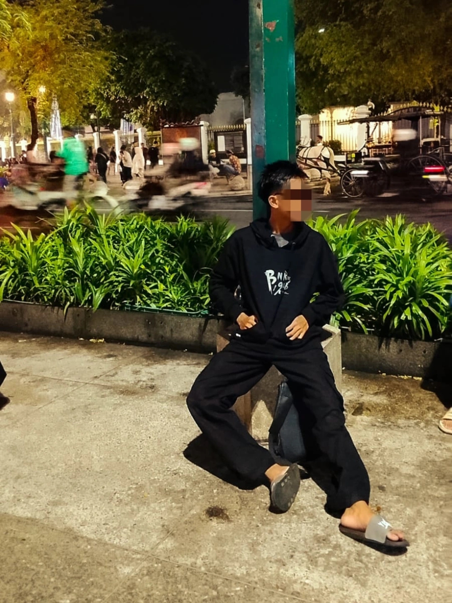
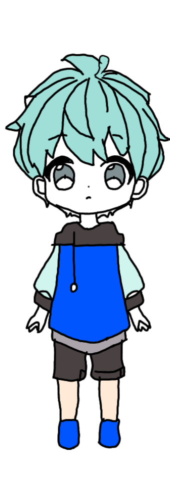
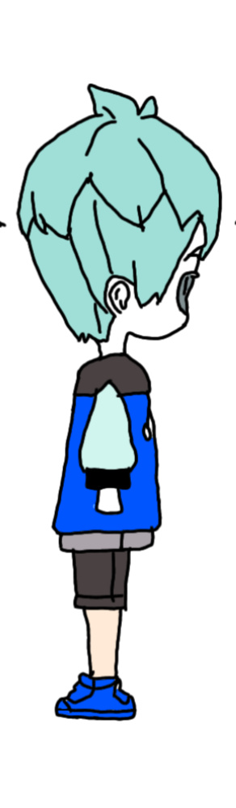
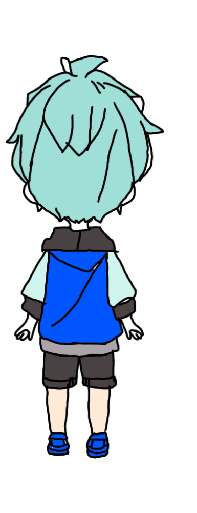
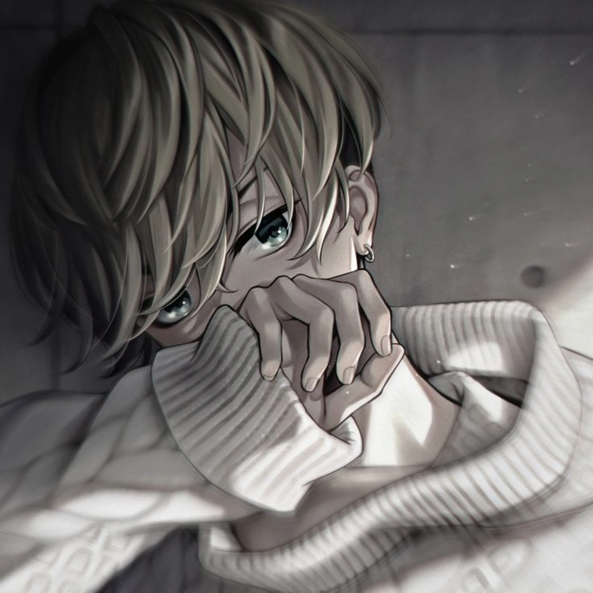
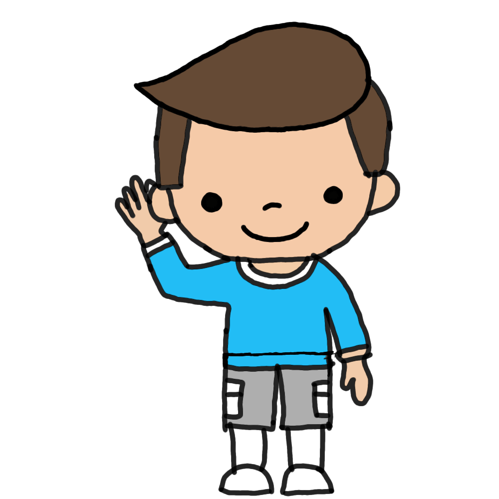
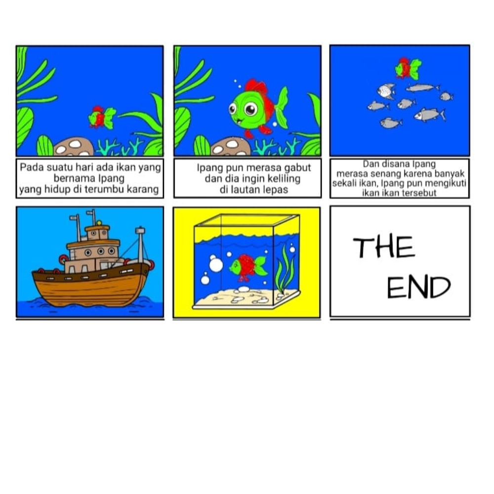

Saya Siswa SMK Muhammna Web
Dzaki M.Rayyan Kelas Xl Animasi umur:16 Tahun Tanggal Lahir:09April 2009 Tempat tanggal Lahir:TEGAL Hobi:Badminton Cita cita: Masinis
Joki Balap Merpati

Karakter dalam gambar tersebut memiliki proporsi tubuh yang unik Kepala Besar: Ukurannya hampir sama besar dengan badannya. Mata Besar: Memberikan kesan lugu dan ekspresif. Tubuh Sederhana: Tangan dan kaki biasanya digambar tanpa detail otot atau jari yang rumit Cara Membuat Gambar Tersebut Jika Anda ingin mencoba membuatnya sendiri, berikut adalah langkah-langkah dasarnya: 1. Tentukan Proporsi (Sketsa Dasar) Gunakan teknik "2 Kepala". Gambar dua lingkaran bertumpuk secara vertikal. Lingkaran atas untuk kepala, dan lingkaran bawah untuk batas panjang tubuh hingga kaki. 2. Gambar Wajah Buat garis bantu vertikal dan horizontal di tengah lingkaran kepala. Tempatkan mata yang besar di bagian bawah lingkaran kepala. Mulut dan hidung biasanya hanya berupa titik kecil atau garis sederhana. 3. Rambut yang "Bervolume" Seperti pada gambar, rambut Chibi biasanya digambar dalam gumpalan-gumpalan besar (tidak helai demi helai). Berikan sedikit jarak antara tengkorak kepala dengan garis rambut agar terlihat tebal. 4. Pakaian yang Longgar Gunakan bentuk-bentuk dasar seperti persegi atau trapesium untuk baju dan celana. Seperti di contoh, jaket hoodie digambar menutupi sebagian besar lekuk tubuh agar terlihat lebih imut. 5. Garis Luar (Line Art) Gunakan garis hitam yang agak tebal dan tegas untuk membingkai karakter tersebut agar terlihat menonjol. 6. Pewarnaan Flat Gunakan warna-warna dasar tanpa terlalu banyak bayangan (shading). Dalam gambar tersebut, warnanya sangat sederhana: biru cerah, abu-abu gelap, dan warna kulit pucat. Alat yang Bisa Digunakan Aplikasi Digital: Ibis Paint X (sangat populer untuk HP), MediBang Paint, atau Procreate. Tradisional: Pensil untuk sketsa, spidol hitam (drawing pen) untuk garis luar, dan pensil warna atau marker untuk mewarnai.

Tentukan Proporsi (Sketsa Dasar) Gunakan teknik "2 Kepala". Gambar dua lingkaran bertumpuk secara vertikal. Lingkaran atas untuk kepala, dan lingkaran bawah untuk batas panjang tubuh hingga kaki. 2. Gambar Wajah Buat garis bantu vertikal dan horizontal di tengah lingkaran kepala. Tempatkan mata yang besar di bagian bawah lingkaran kepala. Mulut dan hidung biasanya hanya berupa titik kecil atau garis sederhana. 3. Rambut yang "Bervolume" Seperti pada gambar, rambut Chibi biasanya digambar dalam gumpalan-gumpalan besar (tidak helai demi helai). Berikan sedikit jarak antara tengkorak kepala dengan garis rambut agar terlihat tebal. 4. Pakaian yang Longgar Gunakan bentuk-bentuk dasar seperti persegi atau trapesium untuk baju dan celana. Seperti di contoh, jaket hoodie digambar menutupi sebagian besar lekuk tubuh agar terlihat lebih imut

Some quick example text to build on the card title and make up the bulk of the card's contenPersiapan Alat Kamu bisa membuatnya secara digital (lebih mudah untuk pewarnaan seperti di gambar) atau manual: Digital: Gunakan aplikasi seperti Ibis Paint X, Medibang Paint, atau Procreate Manual: Kertas, pensil, penghapus, drawing pen (untuk lineart), dan spidol atau pensil warna. Langkah-Langkah Menggambar Tahap Sketsa (Gunakan Pensil Tipis) Kepala: Buat lingkaran besar. Karena ini gaya chibi, ukuran kepala biasanya hampir sama besar dengan ukuran badan. Badan: Tarik garis vertikal kecil di bawah kepala, lalu buat kotak atau bentuk lonjong untuk badan. Kaki dan Tangan: Buat garis sederhana untuk menentukan posisi berdiri samping seperti pada gambar. Tahap Detail (Lineart) Wajah: Gambar garis profil samping. Mulailah dari dahi, lekukan hidung kecil, dan dagu yang bulat. Tambahkan satu mata besar di sisi samping. Rambut: Buat gumpalan rambut yang agak tebal dan runcing-runcing (spiky). Jangan lupa tambahkan detail telinga di tengah antara wajah dan bagian belakang kepala. Pakaian: Gambar hoodie yang agak longgar. Berikan detail jahitan di bagian pundak dan ujung lengan baju. Celana dan Sepatu: Gambar celana pendek sederhana dan sepatu kets dengan sol yang agak tebal. Tahap Pewarnaan Warna Dasar: Isi setiap bagian dengan warna solid (Biru untuk baju, Toska untuk rambut, Cokelat untuk celana). Shadow (Bayangan): Tambahkan warna yang sedikit lebih gelap di bagian lipatan baju, di bawah rambut, dan di bagian belakang kaki untuk memberikan efek kedalaman. Outlining: Tebalkan garis tepi menggunakan warna hitam atau cokelat tua agar karakter terlihat tegas. Tips Tambahan: Jika kamu menggunakan aplikasi digital, gunakan fitur Layers (Lapisan). Pisahkan lapisan antara sketsa, garis bersih (lineart), dan warna agar lebih mudah diperbaiki jika ada kesalahan.

Some quick example text to build on the card title and make up the bulk of the card's contentWajah: Gambar garis profil samping. Mulailah dari dahi, lekukan hidung kecil, dan dagu yang bulat. Tambahkan satu mata besar di sisi samping. Rambut: Buat gumpalan rambut yang agak tebal dan runcing-runcing (spiky). Jangan lupa tambahkan detail telinga di tengah antara wajah dan bagian belakang kepala. Pakaian: Gambar hoodie yang agak longgar. Berikan detail jahitan di bagian pundak dan ujung lengan baju. Celana dan Sepatu: Gambar celana pendek sederhana dan sepatu kets dengan sol yang agak tebal. Tahap Pewarnaan Warna Dasar: Isi setiap bagian dengan warna solid (Biru untuk baju, Toska untuk rambut, Cokelat untuk celana). Shadow (Bayangan): Tambahkan warna yang sedikit lebih gelap di bagian lipatan baju, di bawah rambut, dan di bagian belakang kaki untuk memberikan efek kedalaman. Outlining: Tebalkan garis tepi menggunakan warna hitam atau cokelat tua agar karakter terlihat tegas. Tips Tambahan: Jika kamu menggunakan aplikasi digital, gunakan fitur Layers (Lapisan). Pisahkan lapisan antara sketsa, garis bersih (lineart), dan warna agar lebih mudah diperbaiki jika ada kesalahan.

Gunakan Canva (untuk pemula) atau Ibis Paint X (untuk gambar tangan). Layout: Buat 6 kotak persegi (grid 3x2). Visual: Masukkan gambar karakter (ikan) dan latar (laut) secara berurutan. Teks: Tambahkan kotak putih di bawah gambar untuk narasi cerita. Simpan: Ekspor sebagai JPG atau PNG..

Layout: Buat 6 kotak persegi (grid 3x2). Visual: Masukkan gambar karakter (ikan) dan latar (laut) secara berurutan. Teks: Tambahkan kotak putih di bawah gambar untuk narasi cerita. Simpan: Ekspor sebagai JPG atau PNG
Disiplin
Disiplin
Disiplin
Disiplin
Menulis Menggambar Edit Video Membetulkan Motor
contact me for further information or discussion Email:hard skill
contact
dzakimuhammadrayyan09@gmail.com